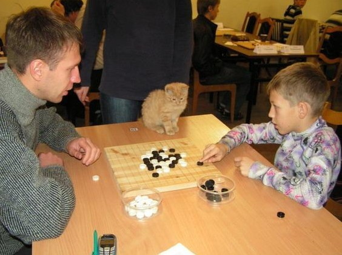

俄锦第一联赛的一张有趣照片
#1 俄锦第一联赛的一张有趣照片 作者：无尽 发表时间：2009-10-15 9:25:35

“连珠猫”
正在进行的第18届俄罗斯锦标赛第一联赛的某个场景
挺可爱的小猫，我也联想到近期比较热门的北大“学术猫”
比赛共39人参加，时间90/1(2)，Rejection规则（随便看了下，留下山口和索索夫规则比较多）
目前进行了六轮，Mikhail Kozhin以5.5分不败领先.. 最终应该前8名出线进入最高联赛
［ 失落刀 于 2009-10-15 18:27:29 时花20金币送鲜花一朵］
#2 Re:俄第一联赛的一张有趣照片 作者：踏雪小子 发表时间：2009-10-15 10:43:46
小猫当裁判，谁犯规就挠谁。哈哈
#3 Re:俄锦第一联赛的一张有趣照片 作者：茗弈宽容 发表时间：2009-10-15 11:51:21
小猫眯
#4 Re:俄锦第一联赛的一张有趣照片 作者：岑小鱼 发表时间：2009-10-15 15:17:10
仲裁猫~~~~#5 Re:俄锦第一联赛的一张有趣照片 作者：沈毅 发表时间：2009-10-15 18:19:36
 棋盘不错
棋盘不错
#6 Re:俄锦第一联赛的一张有趣照片 作者：裁决殿雪月 发表时间：2009-10-15 18:48:29
在猫的世界里根本不知道这两个高级动物在干嘛……#7 Re:俄锦第一联赛的一张有趣照片 作者：水月 发表时间：2009-10-15 19:40:32
汗。。。世锦赛A组的果然在其他比赛里都很强大#8 Re:俄锦第一联赛的一张有趣照片 作者：叶昀 发表时间：2009-11-24 23:03:39
裁猫好专业，没看别的就只看棋
#9 Re:俄锦第一联赛的一张有趣照片 作者：星月族 发表时间：2009-12-23 15:47:02
棋盘确实有特色#10 Re:俄锦第一联赛的一张有趣照片 作者：老黄 发表时间：2009-12-23 22:02:31
外国猫跟中国 猫 是一样的